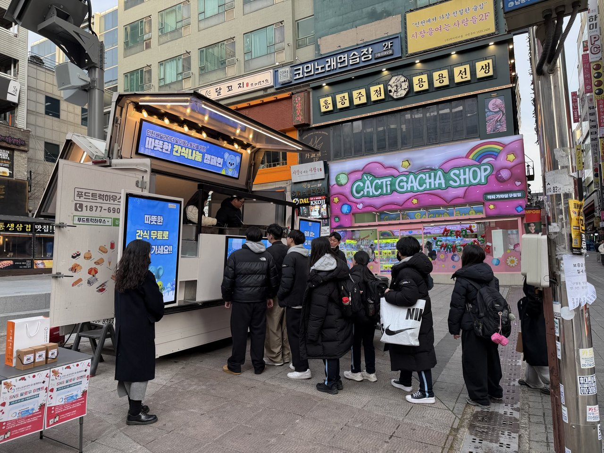
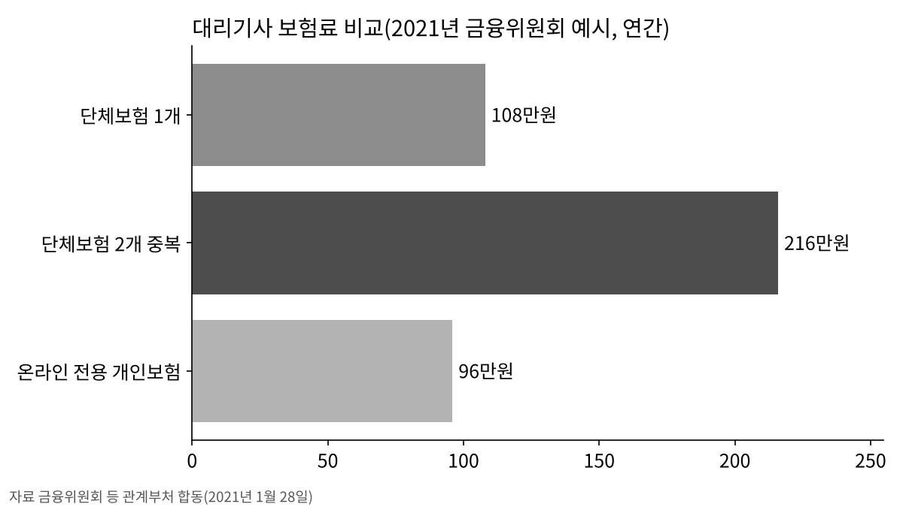
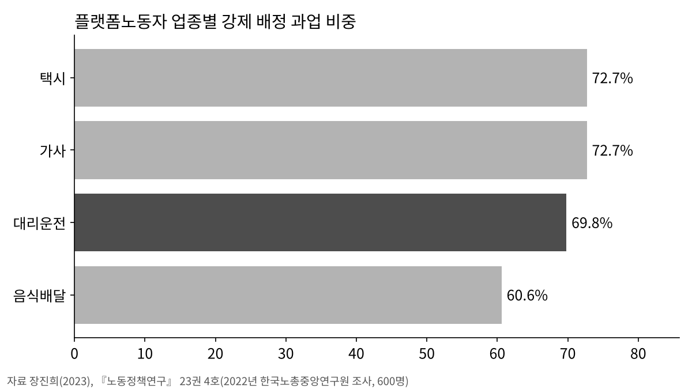

대리기사 단체보험 강요·등급제, 카카오·티맵 등 4개사 시정방안 제시
공정위 동의의결 개시, 보험료 절감분 건당 지원 제안
카카오 상생지원금 15억1000만원·기사등급제 폐지안
2021년 개인보험 조회 시스템, 카카오·티맵 미활용
AI경제저널=김갑봉 기자 | 공정거래위원회가 대리운전 중개 4개사의 동의의결 절차를 열었다. 카카오모빌리티와 티맵모빌리티, 씨엠엔피, 와이엘피다.
공정위는 지난 9일 이 결정을 내렸고 16일 공개했다. 동의의결은 법 위반 혐의를 받는 사업자가 스스로 시정방안을 내는 제도다. 공정위가 그 방안을 받아들이면 위반 여부 판단을 미루고 사건을 끝낸다.
4개사는 지난 6월과 7월 절차 개시를 신청했다. 공정위 보도자료는 4개사가 법적 판단을 다투기보다 거래질서 개선과 대리기사 권익 증진 방안을 마련해 신청했다고 적었다.

개인보험 있어도 단체보험 가입 강요 혐의
공정위가 조사한 행위는 크게 넷이다. 카카오모빌리티와 티맵모빌리티는 개인보험에 가입한 대리기사에게도 단체보험 가입을 강요했다는 혐의를 받았다. 기사등급제로 판매목표를 사실상 강제했다는 혐의도 있다.
씨엠엔피와 와이엘피는 배차 프로그램 운영사다. 전화로 대리운전업체에 들어온 콜을 기사에게 나눠 준다. 프로그램 이름은 각각 「콜마너」와 「로지」다.
두 회사는 콜을 쉽게 잡는 부가기능을 보험상품에 끼워 팔았다는 혐의를 받았다. 같은 기능의 프로그램을 겹쳐 사게 했다는 혐의도 있다.
씨엠엔피는 카카오모빌리티의 100% 자회사였다. 지난해 12월 31일 지분 전량을 코나투스에 팔아 지금은 협력사다. 와이엘피는 티맵모빌리티의 100% 자회사다.
5년 전 만든 조회 시스템, 쓰지 않은 두 플랫폼
단체보험 중복 가입은 5년 전에도 정부가 짚은 문제다. 금융위원회는 관계부처와 함께 2021년 1월 28일 대리기사 보험료 부담 완화 방안을 냈다.
당시 금융위원회 자료를 보면 국내 대리기사는 약 10만명이다. 대리운전업체는 4000여개다.
단체보험은 특정 업체 콜을 탈 때만 보상한다. 그래서 업체 두 곳에서 콜을 받는 기사는 단체보험 두 개에 들어야 했다. 금융위원회가 든 예시에서 단체보험은 한 해 108만원이고, 두 개면 216만원이다.
금융위원회는 그해 1월 29일 「대리운전 개인보험 가입조회 시스템」을 열었다. 업체가 기사의 개인보험 가입 여부를 실시간으로 확인하고 콜을 배정하는 장치다. 함께 내놓은 온라인 전용 개인보험은 한 해 평균 96만원 안팎이었다.
공정위는 이번 보도자료에서 카카오모빌리티와 티맵모빌리티가 이 시스템을 활용하지 않았다고 밝혔다.

보험료 절감분 건당 지원, 등급제 폐지 제안
4개사가 낸 방안은 거래질서 개선방안과 상생방안으로 나뉜다.
카카오모빌리티는 개인보험 연동을 시작하고, 단체보험료가 줄어든 만큼을 기사에게 건당 지원금으로 주겠다고 제시했다. 카카오T대리 기사등급제를 없애고 등급에 따라 주던 혜택을 무료로 주는 방안도 냈다.
등급 혜택에는 5초 동안 콜을 혼자 확인하는 우선 배정권이 들어 있다. 기사가 위탁콜을 취소할 때 배차를 제한하던 제재를 완화하는 방안도 들어 있다.
상생방안으로 카카오모빌리티는 전업·고활동·신규 기사 등에게 상생지원금 약 15억1000만원을 주겠다고 했다. 대리기사 안전보장 지원사업에는 약 12억6500만원을 쓰겠다고 제시했다.
티맵모빌리티도 개인보험을 연동하고 절감분을 건당 지원금으로 주겠다고 제시했다. 티맵대리 기사등급제를 없애는 방안도 냈다.
티맵모빌리티는 전화 대리운전업체와 단체보험 정보를 공유하는 건마다 기사에게 추가 지원금을 주겠다고 했다. 보도자료에 적힌 추정 규모는 연 1억8000만원이고, 지급 기간 제한은 없다.
씨엠엔피와 와이엘피는 보험상품과 부가기능을 따로 팔고 값을 내리겠다고 제시했다. 프로그램을 여러 개 쓰는 기사에게 할인을 주는 방안도 냈다. 와이엘피는 「로지」 사용 기사에게 부가기능을 주 1회 무료로 주겠다고 했다.
강제 배정 비중과 순수입
배정 방식과 플랫폼노동자 수입의 관계를 계량 분석한 연구가 있다. 장진희 한국노총중앙연구원 연구위원은 2023년 『노동정책연구』에 「알고리즘과 플랫폼노동자 수입에 관한 연구」를 실었다.
분석 자료는 2022년 한국노총중앙연구원이 조사한 플랫폼노동자 600명이다. 인공지능 배정을 쓰는 음식배달·대리운전·택시·가사 노동자다.
대리운전노동자가 수행한 과업 가운데 강제로 배정된 과업 비중은 69.8%였다. 강제 배정을 따르지 않으면 불이익이 있다는 대리운전노동자는 67.5%였다. 배정 원리를 안다는 대리운전노동자는 14.5%였다.
장 연구위원은 도구변수로 내생성을 통제해 수입 방정식을 추정했다. 4개 업종 전업 노동자 600명 전체를 분석한 결과, 강제 배정 과업 비중이 1% 늘면 월평균 순수입은 0.44% 줄었다. 과업 배분이 투명한 경우 수입은 높았다.

30일 이상 의견 수렴 뒤 최종 결정
공정위는 4개사와 시정방안을 구체화해 잠정 동의의결안을 만든다. 공정거래법 제90조는 동의의결 전에 30일 이상 이해관계인에게 의견을 낼 기회를 주도록 정했다.
공정위는 의견 수렴과 관계기관 협의를 거쳐 최종안을 위원회에 올려 받아들일지 정한다. 동의의결이 확정되면 4개사는 이행계획과 이행결과를 공정위에 내야 한다.
공정거래법 제89조는 동의의결이 법 위반을 인정한 것이 아니라고 정했다. 4개사가 정당한 이유 없이 이행하지 않으면 공정위는 동의의결을 취소하고 중단한 심의를 다시 열 수 있다.
참고문헌
- 장진희, 「알고리즘과 플랫폼노동자 수입에 관한 연구: 알고리즘의 투명성과 강제성을 중심으로」, 『노동정책연구』 제23권 제4호, 한국노동연구원, 2023년, 1~31쪽, http://doi.org/10.22914/jlp.2023.23.4.001
- 공정거래위원회, 「공정위, ㈜카카오모빌리티·티맵모빌리티㈜·㈜씨엠엔피·㈜와이엘피 대상 동의의결 절차 개시」 보도자료, 2026년 11월 16일, https://eiec.kdi.re.kr/policy/materialView.do?num=289582
- 금융위원회 등 관계부처 합동, 「필수노동자인 대리기사의 단체보험 중복가입 문제를 해소하고, 보험료를 낮춘 개인보험 상품을 출시합니다」 보도자료, 2021년 1월 28일, https://fsc.go.kr/no010101/75255
- 보험개발원, 「대리운전 개인보험 가입조회 시스템」, https://driver.kidi.or.kr
- 「독점규제 및 공정거래에 관한 법률」 제89조(동의의결)·제90조(동의의결의 절차)·제91조(동의의결의 취소)
[사진 출처]
- [사진 1] 인천광역시 노동정책과, 「인천시, 혹한기 이동노동자 간식차 캠페인」 보도자료 첨부 사진, 2025년 12월 14일, 공공누리 제1유형(출처표시), https://www.incheon.go.kr/IC010205/view?repSeq=DOM_0000000013739768
※ 이 기사는 AI 프로그램 클로드를 활용해 작성했습니다.
저작권자 © AI경제저널 무단전재 및 재배포, AI학습 및 활용 금지